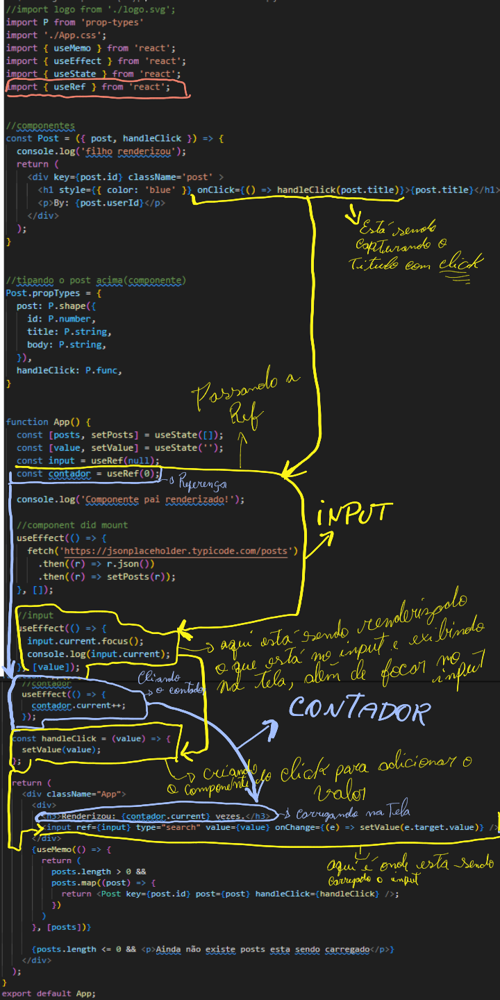

useContext
Fonte: useRef - React
useContext é um React Hook que permite ler e assinar o contexto do seu componente.
const value = useContext(SomeContext)
Referência
useContext(SomeContext)
Chame useContextno nível superior do seu componente para ler e assinar o contexto.
import { useContext } from 'react';
function MyComponent() {
const theme = useContext(ThemeContext);
/......
Exemplo feito
O exemplo que esta sendo usado aqui, terá como referencia o clique no titulo do artigo carregado.
Ele sera automaticamente carredo no input, o react esta atrelando o input com o ref q será usado toda vez que o
input muda ele estará em foco para se caso queira digitar algo amais.
Tambem esta sendo contado a quatidade de vezes que o elemento esta sendo renderizado, este elemento é o PAI.

Parâmetros
-
SomeContext: o contexto que você criou anteriormente com createContext. O
contexto em si não contém as informações, apenas representa o tipo de informação que você pode fornecer ou ler
dos componentes.
Devoluções
- useContext: retorna o valor de contexto do componente de chamada. É determinado como o
valuepassado para o componente
mais próximo SomeContext.Provideracima do componente de chamada na árvore. Se não existir tal provedor, o
valor retornado será o que defaultValuevocê passou createContextpara esse contexto. O valor retornado está
sempre atualizado. O React renderiza novamente automaticamente os componentes que leem algum contexto se ele
mudar.
Ressalvas
-
useContext()a chamada em um componente não é afetada por provedores retornados do mesmo componente. O
correspondente
precisa estar acima do componente que está fazendo a useContext()chamada.
-
O React renderiza automaticamente todos os filhos que usam um contexto específico, começando pelo provedor que
recebe um arquivo value. Os valores anteriores e seguintes são comparados com a Object.iscomparação. Ignorar as
novas renderizações memonão impede que os filhos recebam novos valores de contexto.
-
Se o seu sistema de compilação produzir módulos duplicados na saída (o que pode acontecer com links simbólicos),
isso poderá quebrar o contexto. Passar algo via contexto só funciona se SomeContexto que você usa para fornecer
o contexto e SomeContexto que você usa para lê-lo são exatamente o mesmo object , conforme determinado por uma
===comparação.
Uso
Passando dados profundamente na árvore
Chame useContextno nível superior do seu componente para ler e assinar o contexto.
import { useContext } from 'react';
function Button() {
const theme = useContext(ThemeContext);
// ...
useContextretorna o valor do contexto para o contexto que você passou. Para determinar o valor do contexto, o
React pesquisa a árvore de componentes e encontra o provedor de contexto mais próximo acima para aquele contexto
específico.
Para passar o contexto para um Button, envolva-o ou um de seus componentes pai no provedor de contexto
correspondente:
function MyPage() {
return (
);
}
function Form() {
// ... renders buttons inside ...
}
Não importa quantas camadas de componentes existem entre o provedor e o Button. Quando um Button lugar dentro de
Formchama useContext(ThemeContext), ele receberá "dark"como valor.
useContext()sempre procura o provedor mais próximo acima do componente que o chama. Ele pesquisa para cima e não
considera provedores no componente do qual você está ligando useContext().